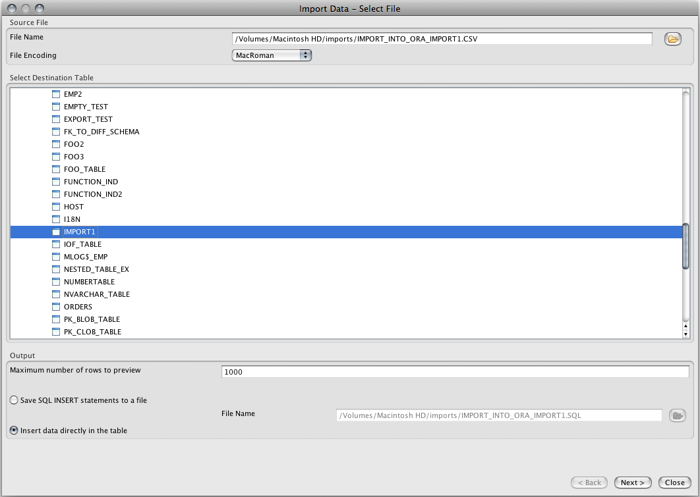
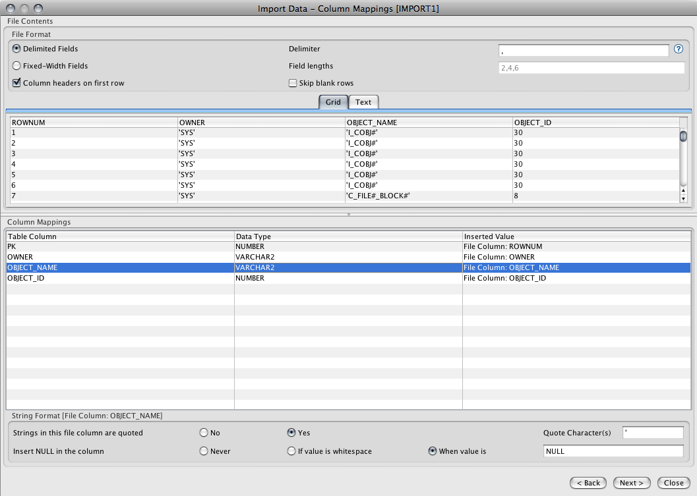
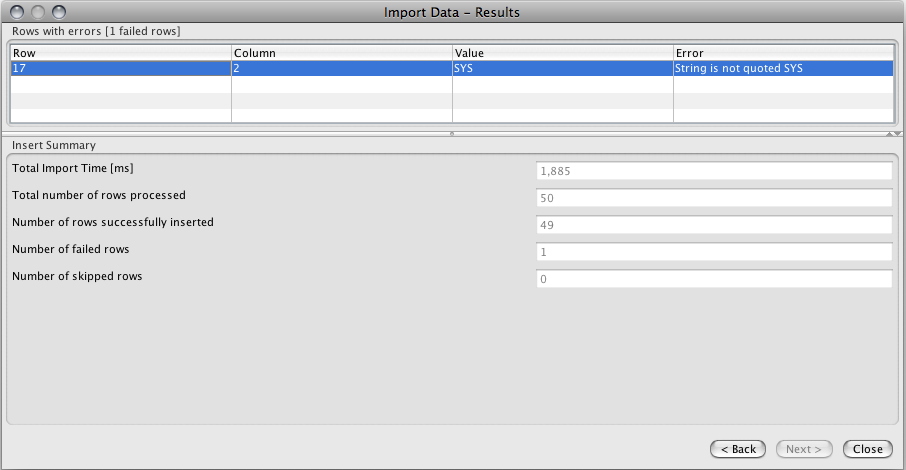

The SQL Import Tool allows you to import data from a file containing comma-separated values (CSV) or fixed-length values into a database table. The import tool works with all supported databases, including Oracle, DB2, Sybase, SQL Server, PostgreSQL and MySQL. You can invoke the import tool from the Tools-menu or by right-clicking a table and selecting the 'Import Data Into Table' option. Since all rows are not read into memory at the same time, it is possible to import thousands or even millions of rows into a table. It's always a good idea to start with a small file containing just a couple of values and make sure it works, before trying to import thousands of entries.
The first page of the SQL import tool allows you to select the file to be imported as well as the table that the data will be inserted into. You can start by clicking on the open file button to browse to the file containing your data. You can optionally select the file encoding from the list of supported encoding, although in most cases the default encoding should be correct. In the Output-section you can enter the number of rows that will be shown in the Preview-pane on the following page. If you make this number too big you may run out of memory as all these rows must be in memory at the same time. This section also lets you decide if you want to import the data directly into the table or if you want to create INSERT-statements that you can run later on. If you select the INSERT-statements option, you need to provide the name of the output file. After making all the necessary selections, click on Next to proceed to the Column Mappings panel.

The 'File Contents' section of this screen lets you view the data in the input file, only the number of rows you indicated on the first page will be shown. First you need to select if your input file contains CSV (comma separated values) or fixed-length fields. If you choose 'Delimited Fields' you can change the default delimiter character which is comma (,). If you choose fixed-width fields, you need to enter the sizes for each field in the file. You must separate the lengths by a comma, e.g. 5,12,3,22. Finally, this section lets you also select if blank rows should be skipped and if your file's fist row contains column headers or not. The lower part of this screen contains the column mappings grid. This grid lets you decide what will be inserted into each of the table's columns, if anything. Start by selecting the first column of the table, i.e. the first row of the Column Mappings-grid. Next, click on the 'Inserted Value' cell and pick one of the following options:
If you picked one of the file columns, you need to specify how the value is formatted in the input file and under what conditions will a NULL inserted into the column. For example, if the data type of the database column is VARCHAR, the input value is treated as a string, i.e. it doesn't need to be converted to a different data type. However, you need to specify if the string is quoted and if so, what is the quote character. By default it is a single quote. Similarly for temporal (DATE, TIME, DATETIME) and numerical columns, you need to specify how the values are formatted in the file.
NOTICE: The column values CANNOT contain the delimiter character, otherwise the import will fail for that row.
Once you have configured all of the table's columns, click on Next to start the import. Depending on what you selected on the first page, either a SQL file will be generated or the imported values will be directly inserted into the database table. While the import is being performed, you can monitor the number of imported rows in the progress dialog.

The last screen of the SQL Import Tool will show the results of the import. The upper section will show all the failed rows and the failure reason. If the selected import format was INSERT-statements, the lower part will contain a preview of the generated SQL statements. If you selected the values to be imported directly into the table, the lower part will contain a summary of the import process, including the following values:

On the last page of the import wizard you can click on the 'Save Project' button to save the selected import settings to a project file. These saved project files can then be loaded on the first page using the 'Load Project' button. The project file contains all selected options including the destination table and column formats.
The import tool can be invoked from a command shell using settings from a saved project file. This allows you to run import regularly using cron or a similar mechanism. The following shell command will run an import from settings in 'myproject.xml':
commandLine -import myproject.xml
where 'myproject.xml' is a saved project file. You can use project files on different machines as long as the configured server connection names match. The project files are standard xml text files that can be edited manually outside DB Solo.
The command line tool will output errors and other messages in import.log file.
| Back to Index |
DB Solo www.dbsolo.com support@dbsolo.com |